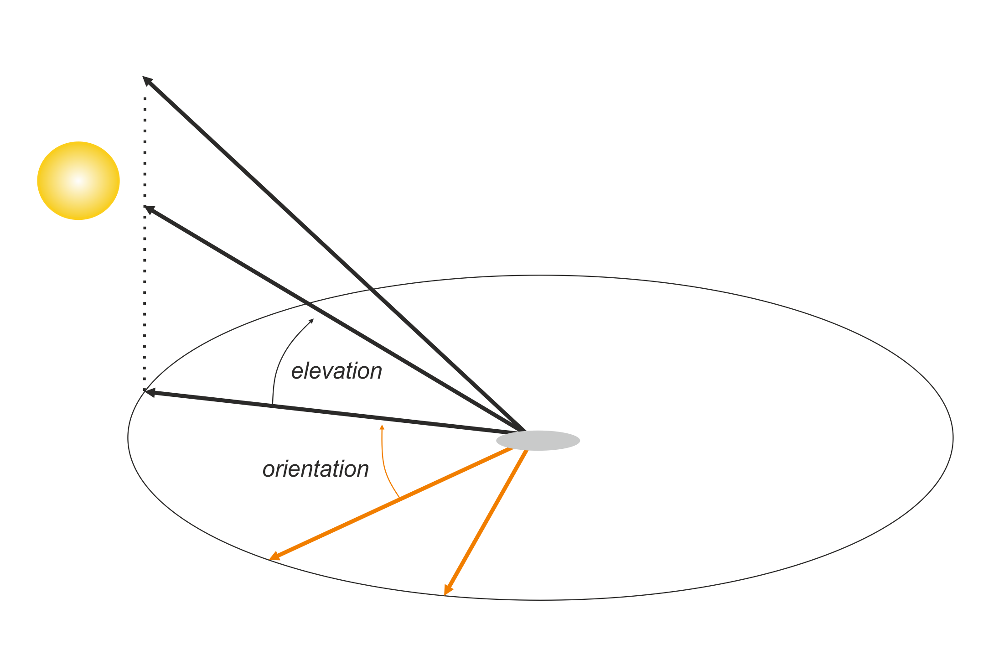

Hillshade effects

It is very common to see relief maps with shadow effects, also known as ‘hillshade’, which generates visual depth. How can we create these effects in R and how to include them in ggplot2?
Packages
| Package | Description |
|---|---|
| tidyverse | Collection of packages (visualization, manipulation): ggplot2, dplyr, purrr, etc. |
| sf | Simple Feature: import, export and manipulate vector data |
| elevatr | Access to elevation data from various APIs |
| terra | Import, export and manipulate raster ({raster} successor package) |
| whitebox | An R interface to the ‘WhiteboxTools’ library, which is an advanced geospatial data analysis platform |
| tidyterra | Helper functions for working with {terra} |
| giscoR | Administrative boundaries of the world |
| ggnewscale | Extension for ggplot2 of multiple ‘scales’ |
# install the packages if necessary
if(!require("tidyverse")) install.packages("tidyverse")
if(!require("sf")) install.packages("sf")
if(!require("elevatr")) install.packages("elevatr")
if(!require("terra")) install.packages("terra")
if(!require("whitebox")) install.packages("whitebox")
if(!require("tidyterra")) install.packages("tidyterra")
if(!require("giscoR")) install.packages("giscoR")
if(!require("ggnewscale")) install.packages("ggnewscale")
# packages
library(sf)
library(elevatr)
library(tidyverse)
library(terra)
library(whitebox)
library(ggnewscale)
library(tidyterra)
library(giscoR)
library(units)Data
As an area of interest, we use Switzerland in this example. Except for lake boundaries download, the necessary data is obtained through APIs using different packages. For example, the giscoR package allows you to get country boundaries with different resolutions.
suiz <- gisco_get_countries(country = "Switzerland", resolution = "03")
plot(suiz)
The lake boundaries correspond to a layer of digital cartographic models (DKM500) provided by swisstopo. The objective is to keep only the largest lakes; therefore, we exclude all those with less than 50 km2 and also those located entirely in Italian territory. Remember that with the units package, we can indicate units and thus do calculations.
# import the lakes boundaries
suiz_lakes <- st_read("22_DKM500_GEWAESSER_PLY.shp")## Reading layer `22_DKM500_GEWAESSER_PLY' from data source
## `E:\GitHub\blog_update_2021\content\en\post\2022-07-19-hillshade-effect\22_DKM500_GEWAESSER_PLY.shp'
## using driver `ESRI Shapefile'
## Simple feature collection with 596 features and 14 fields
## Geometry type: POLYGON
## Dimension: XY
## Bounding box: xmin: 2480000 ymin: 1062000 xmax: 2865000 ymax: 1302000
## Projected CRS: CH1903+ / LV95# filter the largest ones
suiz_lakes <- mutate(suiz_lakes, areakm = set_units(SHP_AREA, "m2") %>%
set_units("km2")) %>%
filter(areakm > set_units(50, "km2"),
!NAMN1 %in% c("Lago di Como / Lario",
"Lago d'Iseo",
"Lago di Garda"))
plot(suiz_lakes)## Warning: plotting the first 9 out of 15 attributes; use max.plot = 15 to plot
## all
Digital Elevation Model (DEM)
The get_elev_raster() function allows us to download a DEM from any region of the world through different providers in raster format. By default, it uses AWS. An essential argument is the latitude-dependent resolution, which can be specified as the zoom level (see function help). For example, we use level 10, which at a latitude of 45º would correspond to approximately 100 m.
After obtaining the DEM from Switzerland, we must mask the country’s boundaries. The object’s class is RasterLayer from the raster package, however, the new standard is terra with the class SpatRaster. That’s why we convert it and then apply the mask. Finally, we reproject to the Swiss coordinate system obtained from the vector data.
# get the DEM with
mdt <- get_elev_raster(suiz, z = 10)## Mosaicing & Projecting## Note: Elevation units are in meters.mdt # old RasterLayer class## class : RasterLayer
## dimensions : 3869, 7913, 30615397 (nrow, ncol, ncell)
## resolution : 0.0006219649, 0.0006219649 (x, y)
## extent : 5.625, 10.54661, 45.58354, 47.98992 (xmin, xmax, ymin, ymax)
## crs : +proj=longlat +datum=WGS84 +no_defs
## source : file1a383b30325d.tif
## names : file1a383b30325d
## values : -32768, 32767 (min, max)plot(mdt)
# convert to terra and mask area of interest
mdt <- rast(mdt) %>%
mask(vect(suiz))
# reproject
mdt <- project(mdt, crs(suiz_lakes))
# reproject vect
suiz <- st_transform(suiz, st_crs(suiz_lakes))Before calculating the shadow effect, we create a simple relief map. In ggplot2, we use the geom_raster() geometry, indicating the longitude, latitude and the variable to define the color. We add the boundaries of the lakes using geom_sf() since it is an sf object. Here we only indicate the fill color with a light blue. Then, with the help of scale_fill_hypso_tint_c(), we apply a range of colors corresponding to the relief, also called hypsometric tinting, and we define the breaks in the legend. We make appearance adjustments in the legend and the graph’s style in the rest of the functions.
# convert the raster into a data.frame of xyz
mdtdf <- as.data.frame(mdt, xy = TRUE)
names(mdtdf)[3] <- "alt"
# map
ggplot() +
geom_raster(data = mdtdf,
aes(x, y, fill = alt)) +
geom_sf(data = suiz_lakes,
fill = "#c6dbef",
colour = NA) +
scale_fill_hypso_tint_c(breaks = c(180, 250, 500, 1000,
1500, 2000, 2500,
3000, 3500, 4000)) +
guides(fill = guide_colorsteps(barwidth = 20,
barheight = .5,
title.position = "right")) +
labs(fill = "m") +
coord_sf() +
theme_void() +
theme(legend.position = "bottom")
Calculate the hillshade
Let’s remember that the hillshade effect is nothing more than adding a hypothetical illumination with respect to a position of a light source to gain depth. Shadows depend on two variables, azimuth, the angle from the orientation on the surface of a sphere, and elevation, the angle from the height of the source.

The information required to simulate lighting is the digital elevation model. The slope and aspect can be derived from the DEM using the terrain() function from the terra package. The unit must be radians. Once we have all the data, we can use the shade() function to indicate the angle (elevation) and direction (azimuth). The result is a raster with values between 0 and 255, which shows shadows with low values, being 0 black and 255 white.
# estimate the slope
sl <- terrain(mdt, "slope", unit = "radians")
plot(sl)
# estimate the aspect or orientation
asp <- terrain(mdt, "aspect", unit = "radians")
plot(asp)
# calculate the hillshade effect with 45º of elevation
hill_single <- shade(sl, asp,
angle = 45,
direction = 300,
normalize= TRUE)
# final hillshade
plot(hill_single, col = grey(1:100/100))
Combine the relief and shadow effect
The problem with adding both the relief with its hypsometric tints and the hillshade effect inside ggplot2 is that we have two different fills or scales for each layer.
The solution is to use the ggnewscale extension, which allows you to add multiple scales of the same argument. First, we add the hillshade with geom_raster(), then we define the grey tones, and before adding the altitude, we include the new_scale_fill() function to mark a different fill. To achieve the effect, it is necessary to give a degree of transparency to the relief layer; in this case, it is 70%. The choice of direction is important, which is why we must always take into account the place and the apparent path of the sun (sunearthtools).
# convert the hillshade to xyz
hilldf_single <- as.data.frame(hill_single, xy = TRUE)
# map
ggplot() +
geom_raster(data = hilldf_single,
aes(x, y, fill = lyr1),
show.legend = FALSE) +
scale_fill_distiller(palette = "Greys") +
new_scale_fill() +
geom_raster(data = mdtdf,
aes(x, y, fill = alt),
alpha = .7) +
scale_fill_hypso_tint_c(breaks = c(180, 250, 500, 1000,
1500, 2000, 2500,
3000, 3500, 4000)) +
geom_sf(data = suiz_lakes,
fill = "#c6dbef", colour = NA) +
guides(fill = guide_colorsteps(barwidth = 20,
barheight = .5,
title.position = "right")) +
labs(fill = "m") +
coord_sf() +
theme_void() +
theme(legend.position = "bottom")
Multidirectional shadows
We have seen a unidirectional effect; although it is the most common, we can create a smoother and even more realistic effect by combining several directions.
We map onto a vector of various directions to which the shade() function is applied with a fixed elevation angle. We then convert the raster list to a multi-layered object to reduce them by adding all the layers.
# pass multiple directions to shade()
hillmulti <- map(c(270, 15, 60, 330), function(dir){
shade(sl, asp,
angle = 45,
direction = dir,
normalize= TRUE)}
)
# create a multidimensional raster and reduce it by summing up
hillmulti <- rast(hillmulti) %>% sum()
# multidirectional
plot(hillmulti, col = grey(1:100/100))
# unidirectional
plot(hill_single, col = grey(1:100/100))
We do the same as before to visualize the relief with multidirectional shadows.
# convert the hillshade to xyz
hillmultidf <- as.data.frame(hillmulti, xy = TRUE)
# map
ggplot() +
geom_raster(data = hillmultidf,
aes(x, y, fill = sum),
show.legend = FALSE) +
scale_fill_distiller(palette = "Greys") +
new_scale_fill() +
geom_raster(data = mdtdf,
aes(x, y, fill = alt),
alpha = .7) +
scale_fill_hypso_tint_c(breaks = c(180, 250, 500, 1000,
1500, 2000, 2500,
3000, 3500, 4000)) +
geom_sf(data = suiz_lakes,
fill = "#c6dbef", colour = NA) +
guides(fill = guide_colorsteps(barwidth = 20,
barheight = .5,
title.position = "right")) +
labs(fill = "m") +
coord_sf() +
theme_void() +
theme(legend.position = "top")
Another alternative for multidirectional shadows
With less control over the directions, it would also be possible to apply the wbt_multidirectional_hillshade() function from the whitebox package. WhiteboxTool contains many tools as an advanced geospatial data analysis platform. The disadvantage is that we lose control over the directions and that it is also necessary to export the DEM to geotiff to obtain another raster with the shadows.
We first install the library with the install_whitebox() function.
# instal whitebox
install_whitebox()# export the DEM
writeRaster(mdt, "mdt.tiff", overwrite = TRUE)
# launch whitebox
wbt_init()
# create the hillshade
wbt_multidirectional_hillshade("mdt.tiff",
"hillshade.tiff")
# re-import the hillshade
hillwb <- rast("hillshade.tiff")
plot(hillwb)
# remask
hillwb <- mask(hillwb, vect(suiz))
plot(hillwb)
# convert the hillshade to xyz
hillwbdf <- as.data.frame(hillwb, xy = TRUE)
# map
ggplot() +
geom_raster(data = hillwbdf,
aes(x, y, fill = hillshade),
show.legend = FALSE) +
scale_fill_distiller(palette = "Greys") +
new_scale_fill() +
geom_raster(data = mdtdf,
aes(x, y, fill = alt),
alpha = .7) +
scale_fill_hypso_tint_c(breaks = c(180, 250, 500, 1000,
1500, 2000, 2500,
3000, 3500, 4000)) +
guides(fill = guide_colorsteps(barwidth = 20,
barheight = .5,
title.position = "right")) +
labs(fill = "m") +
coord_sf() +
theme_void() +
theme(legend.position = "top")